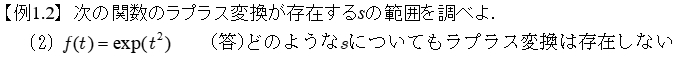

| (%i1) | assume(T>0) ; /*定数の仮定*/ |
| (%i2) | f(t):= %e^(t^2); /*関数f(t)の定義*/ |
| --> |
/*【Maximaコマンド】 積分：integrate(被積分関数, 変数, 下限, 上限) */; |
| (%i3) |
/*関数f(t)のラプラス変換に似た式 (Tを∞に置き換えると，ラプラス変換の式になる．)*/ 'integrate(f(t) · %e^(−s·t), t, 0, T); |
| (%i4) |
/*上式の積分の実行*/ eq1: ev(%, integrate); |
| --> | /*「%i」は純虚数を表す．*/; |
| (%i5) |
/*eq1において，T→∞の極限を取る．*/ limit(eq1, T, inf); |
| --> |
/*Maximaの出力「und」は，「定義されていない」の意味． すなわち，ラプラス変換の積分が収束しないので，ラプラス変換は存在しない．*/; |
| --> | /*【別解】*/; |
| (%i6) | declare(s, real); /*実数と宣言*/ |
| (%i7) |
/*ラプラス変換の被積分関数*/ eq2: f(t) · %e^(−s·t); |
| (%i8) | limit(eq2, t, inf); |
| --> |
/*ラプラス変換の被積分関数が，t→∞の極限で∞となるので，ラプラス変換の積分は 収束しない．すなわち，あらゆるsについてラプラス変換は存在しない．【答え】*/; |
Created with wxMaxima.